Herdr Desktop / Panopticon
Every agent.
One grid.
Toggle from any space
01 / Workspace
Start in
Atlas.
Open Panopticon
Three spaces. Four agents.02 / OVERVIEW
03 / Live input
Beacon
needs you.
03 / Live input
Reply right
in the tile.
Enter ↵
Back to the same splits.04 / RETURN
Click the caption.05 / GO TO PANE
Same terminal. Original pane.05 / BEACON

A mod for Herdr Desktop
herdr-panopticon
Live agent terminals, across every space.
›github.com/eapolinario/herdr-panopticon
▶ Watch the demo 0:32